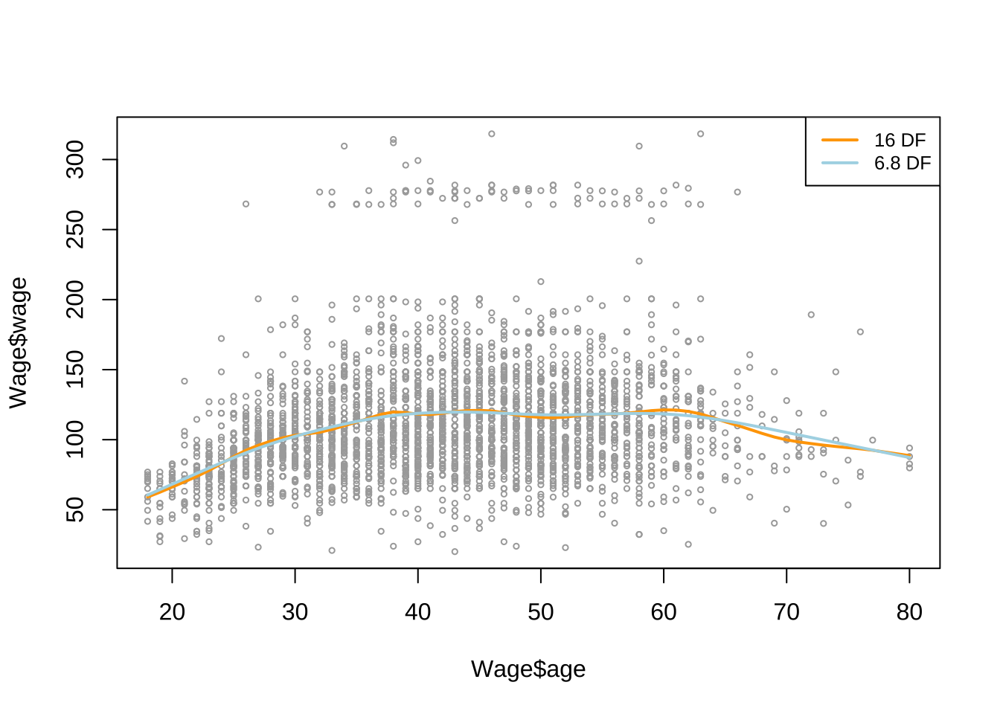
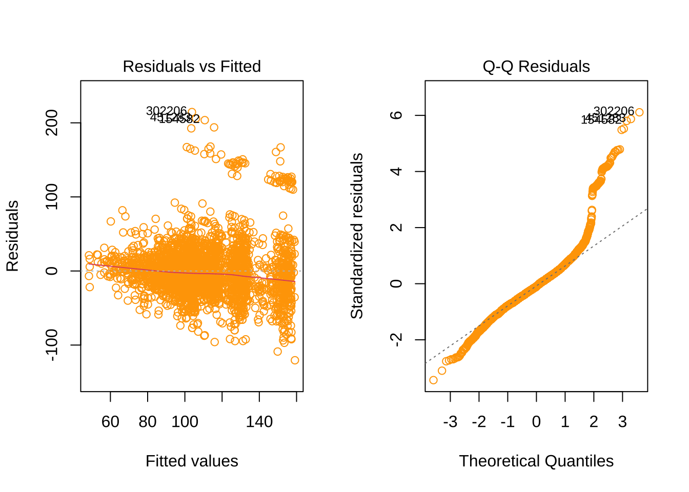
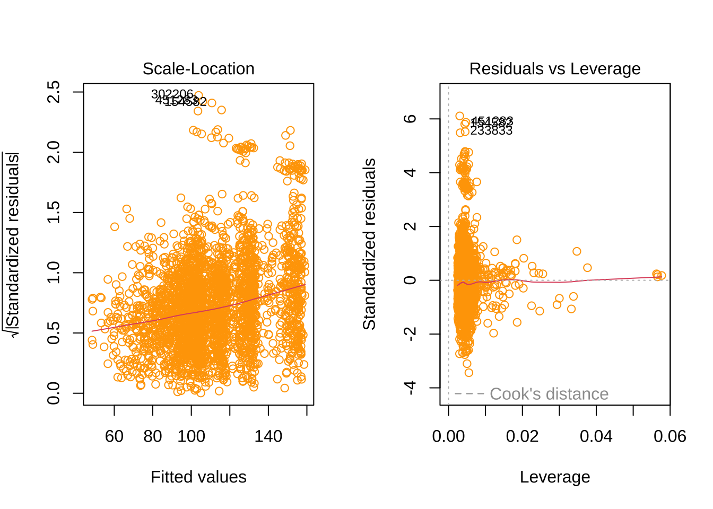
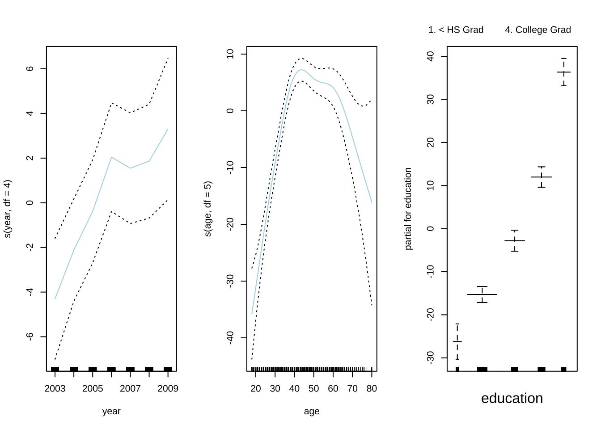
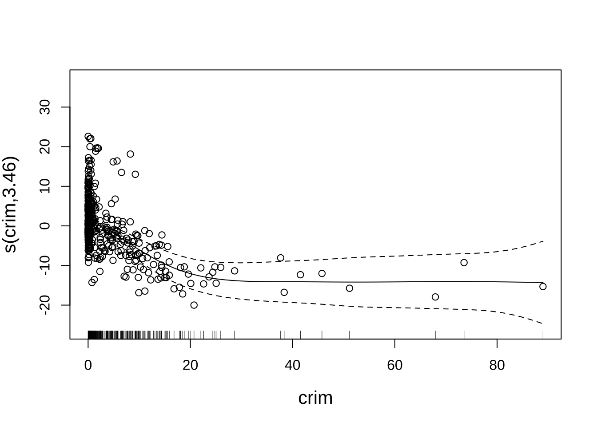
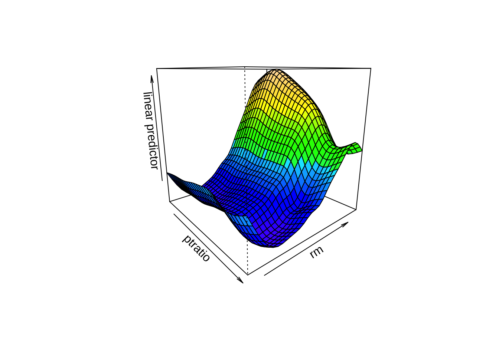
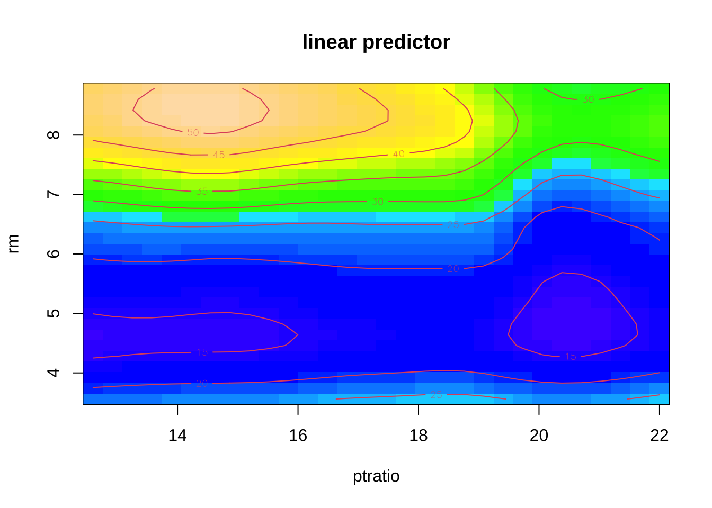
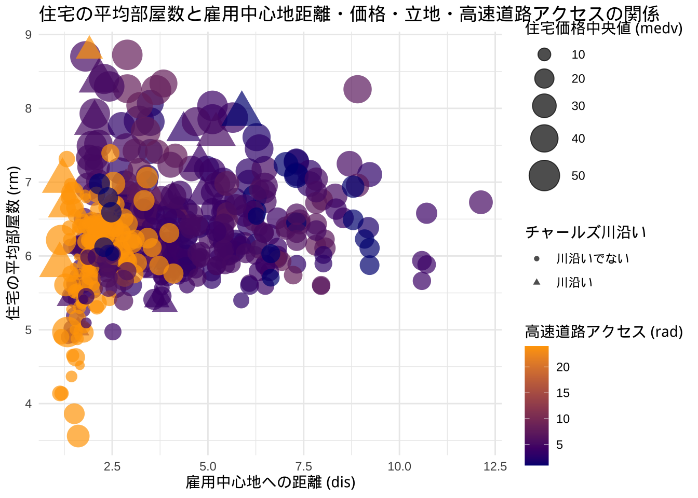

5 一般化加法モデル (GAM)
本章では, GAMを実行するパッケージとして, (参考書ISLRが使用している) gam, およびmgcvを紹介する. しかし, 後述のように, 二つのライブラリを同時に読み込むと プログラムの一部が正常に動作しなくなる可能性があるため, 一つのプログラムの中ではどちらか一方のみの使用が安全である.
具体的には, mgcvのみを使用するのが良い.
- mgcvの方が理論的により適切な計算を行っている (後述).
さらに,
- mgcvの方が, より多様な機能を有している. 例えば,
- パッケージmgcvの方の関数
gam()は, 予測変数間の交互作用をモデルに 取り入れられるなど柔軟性に富む. - パッケージmgcvの方の関数
s()は, 多様な平滑化項を指定することができる.
- パッケージmgcvの方の関数
5.1 パッケージgamの利用
本小節の出所: ISLR, Ch.7 (pp.287–)
関数gam():
- 加法予測子のシンボリック表現や誤差分布を指定の上でGAMをフィット
- バックフィッティング・アルゴリズムを採用 (異なる平滑化やフィッティングの方法を混ぜる)
- 局所回帰や平滑化スプラインをサポート
- usage:
gam(formula, family = gaussian, data, weights, subset, na.action,
start, etastart, mustart, control = gam.control(...),
model = TRUE, method, x = FALSE, y = TRUE, ...)library(ISLR) # Wage
head(Wage)
#> year age maritl race education region
#> 231655 2006 18 1. Never Married 1. White 1. < HS Grad 2. Middle Atlantic
#> 86582 2004 24 1. Never Married 1. White 4. College Grad 2. Middle Atlantic
#> 161300 2003 45 2. Married 1. White 3. Some College 2. Middle Atlantic
#> 155159 2003 43 2. Married 3. Asian 4. College Grad 2. Middle Atlantic
#> 11443 2005 50 4. Divorced 1. White 2. HS Grad 2. Middle Atlantic
#> 376662 2008 54 2. Married 1. White 4. College Grad 2. Middle Atlantic
#> jobclass health health_ins logwage wage
#> 231655 1. Industrial 1. <=Good 2. No 4.318063 75.04315
#> 86582 2. Information 2. >=Very Good 2. No 4.255273 70.47602
#> 161300 1. Industrial 1. <=Good 1. Yes 4.875061 130.98218
#> 155159 2. Information 2. >=Very Good 1. Yes 5.041393 154.68529
#> 11443 2. Information 1. <=Good 1. Yes 4.318063 75.04315
#> 376662 2. Information 2. >=Very Good 1. Yes 4.845098 127.11574Wage: 東海岸賃金データ (Mid-Atlantic Wage Data)
- 東海岸地域 (Mid-Atlantic region) 3000人の男性労働者の賃金その他のデータ.
- year 賃金情報の記録年
- age 労働者の年齢
- maritl 婚姻状況 (因子): 1.未婚, 2. 既婚, 3. 配偶者死別, 4. 離婚 5. 別居
- race 人種 (因子): 1. 白人, 2. 黒人, 3. アジア人, 4. その他
- education 教育水準 (因子): 1. 高校未卒業, 2. 高卒, 3. 大学中退 (課程の一部を修了), 4. 学部卒, 5. 院卒
- region 国の地域（東海岸のみ）
- jobclass 職種 (因子): 1. 産業, 2. 情報
- health 健康状態 (因子): 1. 良好以下, 2. 非常に良好以上
- health_ins 健康保険の有無 (因子): 1. あり, 2. なし
- logwage 労働者の賃金の対数
- wage 労働者の賃金 (名目)多項式回帰
※以下の多項式回帰部分は, 既に配布したものと重複.
fit_lm <- lm(wage ~ poly(age, 4), data = Wage) # 4次の直交多項式
head(poly(Wage$age, 4)) # 4次の多項式
#> 1 2 3 4
#> [1,] -0.0386247992 0.055908727 -0.0717405794 0.086729854
#> [2,] -0.0291326034 0.026298066 -0.0145499511 -0.002599280
#> [3,] 0.0040900817 -0.014506548 -0.0001331835 0.014480093
#> [4,] 0.0009260164 -0.014831404 0.0045136682 0.012657507
#> [5,] 0.0120002448 -0.009815846 -0.0111366263 0.010211456
#> [6,] 0.0183283753 -0.002073906 -0.0166282799 -0.001314381
coef(summary(fit_lm))
#> Estimate Std. Error t value Pr(>|t|)
#> (Intercept) 111.70361 0.7287409 153.283015 0.000000e+00
#> poly(age, 4)1 447.06785 39.9147851 11.200558 1.484604e-28
#> poly(age, 4)2 -478.31581 39.9147851 -11.983424 2.355831e-32
#> poly(age, 4)3 125.52169 39.9147851 3.144742 1.678622e-03
#> poly(age, 4)4 -77.91118 39.9147851 -1.951938 5.103865e-02
fit_lm <- lm(wage ~ poly(age, 4, raw = T), data = Wage) # 非直交化
head(poly(Wage$age, 4, raw = T)) # 4次の多項式
#> 1 2 3 4
#> [1,] 18 324 5832 104976
#> [2,] 24 576 13824 331776
#> [3,] 45 2025 91125 4100625
#> [4,] 43 1849 79507 3418801
#> [5,] 50 2500 125000 6250000
#> [6,] 54 2916 157464 8503056
coef(summary(fit_lm))
#> Estimate Std. Error t value Pr(>|t|)
#> (Intercept) -1.841542e+02 6.004038e+01 -3.067172 0.0021802539
#> poly(age, 4, raw = T)1 2.124552e+01 5.886748e+00 3.609042 0.0003123618
#> poly(age, 4, raw = T)2 -5.638593e-01 2.061083e-01 -2.735743 0.0062606446
#> poly(age, 4, raw = T)3 6.810688e-03 3.065931e-03 2.221409 0.0263977518
#> poly(age, 4, raw = T)4 -3.203830e-05 1.641359e-05 -1.951938 0.0510386498スプライン適合
agelims <- range(Wage$age)
age_grid <- seq(from = agelims[1], to = agelims[2])
library(splines)
# B-スプライン
fit_sp <- lm(wage ~ bs(age, knots = c(25, 40, 60)), data = Wage) # bs: B-スプライン
pred_sp <- predict(fit_sp, newdata = list(age = age_grid), se = T)
plot(Wage$age, Wage$wage, col = "grey")
lines(age_grid, pred_sp$fit, lw = 2)
lines(age_grid, pred_sp$fit + 2 * pred_sp$se, lty = "dashed")
lines(age_grid, pred_sp$fit - 2 * pred_sp$se, lty = "dashed")# 自然スプライン
fit_sp2 <- lm(wage ~ ns(age, df = 4), data = Wage) # ns: 自然スプライン(4次)
pred_sp2 <- predict(fit_sp2, newdata = list(age = age_grid), se = T)
plot(Wage$age, Wage$wage, col = "grey")
lines(age_grid, pred_sp2$fit, lw = 2)
lines(age_grid, pred_sp2$fit + 2 * pred_sp2$se, lty = "dashed")
lines(age_grid, pred_sp2$fit - 2 * pred_sp2$se, lty = "dashed")# 平滑化スプライン
plot(Wage$age, Wage$wage, xlim = agelims, cex = .5, col = "darkgrey")
fit_sp3 <- smooth.spline(Wage$age, Wage$wage, df = 16) # 平滑化スプライン(自由度 = 16)
fit_sp4 <- smooth.spline(Wage$age, Wage$wage, cv = T) # 同 (交差検証により自由度選択)
fit_sp4$df
#> [1] 6.794596
pred_sp2 <- predict(fit_sp2, newdata = list(age = age_grid), se = T)
lines(fit_sp3, col = "orange", lw = 2)
lines(fit_sp4, col = "lightblue", lw = 2)
legend("topright", legend = c("16 DF", "6.8 DF"), col = c("orange", "lightblue"), lty = 1, lwd = 2, cex = .8)
GAM
# lmの実行
fit_gam1 <- lm(wage ~ ns(year, 4) + ns(age, 5) + education, data = Wage)
# ns: natural cubic splineの(Bスプライン)基底行列生成
summary(fit_gam1)
#>
#> Call:
#> lm(formula = wage ~ ns(year, 4) + ns(age, 5) + education, data = Wage)
#>
#> Residuals:
#> Min 1Q Median 3Q Max
#> -120.513 -19.608 -3.583 14.112 214.535
#>
#> Coefficients:
#> Estimate Std. Error t value Pr(>|t|)
#> (Intercept) 46.949 4.704 9.980 < 2e-16 ***
#> ns(year, 4)1 8.625 3.466 2.488 0.01289 *
#> ns(year, 4)2 3.762 2.959 1.271 0.20369
#> ns(year, 4)3 8.127 4.211 1.930 0.05375 .
#> ns(year, 4)4 6.806 2.397 2.840 0.00455 **
#> ns(age, 5)1 45.170 4.193 10.771 < 2e-16 ***
#> ns(age, 5)2 38.450 5.076 7.575 4.78e-14 ***
#> ns(age, 5)3 34.239 4.383 7.813 7.69e-15 ***
#> ns(age, 5)4 48.678 10.572 4.605 4.31e-06 ***
#> ns(age, 5)5 6.557 8.367 0.784 0.43328
#> education2. HS Grad 10.983 2.430 4.520 6.43e-06 ***
#> education3. Some College 23.473 2.562 9.163 < 2e-16 ***
#> education4. College Grad 38.314 2.547 15.042 < 2e-16 ***
#> education5. Advanced Degree 62.554 2.761 22.654 < 2e-16 ***
#> ---
#> Signif. codes: 0 '***' 0.001 '**' 0.01 '*' 0.05 '.' 0.1 ' ' 1
#>
#> Residual standard error: 35.16 on 2986 degrees of freedom
#> Multiple R-squared: 0.293, Adjusted R-squared: 0.2899
#> F-statistic: 95.2 on 13 and 2986 DF, p-value: < 2.2e-16
par(mfrow = c(1, 2))
plot(fit_gam1, se = TRUE, col = "orange")
# GAM
fit_gam3 <- gam(wage ~ s(year, df = 4) + s(age, df = 5) + education, data = Wage)
# s: 平滑化スプライン
#head(gam::s(Wage$age, 5))
summary(fit_gam3) # --> ANOVA
#>
#> Call: gam(formula = wage ~ s(year, df = 4) + s(age, df = 5) + education,
#> data = Wage)
#> Deviance Residuals:
#> Min 1Q Median 3Q Max
#> -119.43 -19.70 -3.33 14.17 213.48
#>
#> (Dispersion Parameter for gaussian family taken to be 1235.69)
#>
#> Null Deviance: 5222086 on 2999 degrees of freedom
#> Residual Deviance: 3689770 on 2986 degrees of freedom
#> AIC: 29887.75
#>
#> Number of Local Scoring Iterations: NA
#>
#> Anova for Parametric Effects
#> Df Sum Sq Mean Sq F value Pr(>F)
#> s(year, df = 4) 1 27162 27162 21.981 2.877e-06 ***
#> s(age, df = 5) 1 195338 195338 158.081 < 2.2e-16 ***
#> education 4 1069726 267432 216.423 < 2.2e-16 ***
#> Residuals 2986 3689770 1236
#> ---
#> Signif. codes: 0 '***' 0.001 '**' 0.01 '*' 0.05 '.' 0.1 ' ' 1
#>
#> Anova for Nonparametric Effects
#> Npar Df Npar F Pr(F)
#> (Intercept)
#> s(year, df = 4) 3 1.086 0.3537
#> s(age, df = 5) 4 32.380 <2e-16 ***
#> education
#> ---
#> Signif. codes: 0 '***' 0.001 '**' 0.01 '*' 0.05 '.' 0.1 ' ' 1
par(mfrow = c(1, 3))
plot(fit_gam3, se = TRUE, col = "lightblue")
ところで, gam()内で実行されている“平滑化スプライン”は, モデルの複雑性を示す“自由度” (関数s()の2つ目の引数で指定) の大きさで包含関係を実質的に表せることができる.
すなわち, モデル間に包含関係 (ネスト, “nested”) がある場合には,
線形モデルの場合と同様に, 関数anova()を適用し,
両者のデータへの当てはまりの悪さ (乖離度) の差の有意性を調べることで,
モデルを複雑にすることの妥当性について, 定量的に評価することができる.
なお, モデル間に包含関係がない場合には, これまでと同様, AICやBICの大きさを比較することでモデルの選択をすれば良い (パッケージgamの使用したモデル選択については, 以下の注意事項を参照).
fit_gam1 <- gam(wage ~ s(age, df = 5) + education, data = Wage)
fit_gam2 <- gam(wage ~ year + s(age, df = 5) + education, data = Wage)
anova(fit_gam1, fit_gam2, fit_gam3, test = "F")
#> Analysis of Deviance Table
#>
#> Model 1: wage ~ s(age, df = 5) + education
#> Model 2: wage ~ year + s(age, df = 5) + education
#> Model 3: wage ~ s(year, df = 4) + s(age, df = 5) + education
#> Resid. Df Resid. Dev Df Deviance F Pr(>F)
#> 1 2990 3711731
#> 2 2989 3693842 1 17889.2 14.4771 0.0001447 ***
#> 3 2986 3689770 3 4071.1 1.0982 0.3485661
#> ---
#> Signif. codes: 0 '***' 0.001 '**' 0.01 '*' 0.05 '.' 0.1 ' ' 1
AIC(fit_gam1, fit_gam2, fit_gam3)
#> df AIC
#> fit_gam1 7 29897.55
#> fit_gam2 8 29885.06
#> fit_gam3 8 29887.75これより, モデル1と2の間には有意水準0.1%で差が見られるが, 2と3の間には (有意水準10%でも) 差は見られない.
AICの大きさで比較した場合には, モデル2が最小である.
すなわち, この3つのモデルの中では, ageのみに平滑化スプライン (自由度5) を適用したモデル2が妥当と言えそうである.
# ISLRの修正: preplot.Gam → preplot
tmp <- preplot(fit_gam2, terms = labels(fit_gam2))
age_sm <- cbind(tmp$`s(age, df = 5)`$x, tmp$`s(age, df = 5)`$y)
age_sm_uniq <- unique(age_sm[order(age_sm[, 1]), ])
plot(age_sm_uniq, type = "l", xlab = "age", ylab = "s(age, df = 5)")パッケージgamの使用に関する注意点
ところで, 関数gam()は, R言語の前身であるS言語から継承されてきた古い関数であり,
関数内部における適合計算の欠点が指摘されている.
その後, GAMの適合アルゴリズムは今日までに種々提案されており 次節で解説するパッケージmgcvは, 欠点を改善した それらの一つをRパッケージ化したものである.
また, パッケージgamの関数gam()はクラス属性”gam”を持つオブジェクトを出力するが,
これはクラス“glm”を継承していることから, 変数選択/モデル選択の際に使用する
関数anova()やAIC()の内部では,
gam()の出力はクラス“glm”のオブジェクトとして処理され, それ自体が不正確性を
もたらす可能性がある.
したがって, gamのgam()の推定結果や,
その出力オブジェクトを使ったモデルの比較や選択は信頼性にやや欠ける点に注意が必要である.
補足:
**gam**内の関数`s()`は外生的に与えられる引数`df`によって固定された自由度で平滑化スプライン適合する.
一方, **mgcv**の方の`s()`はデータから平滑化パラメータを
自動的に推定しつつ, 平滑化スプライン適合する (“実質的自由度" (ISLR, p.278) が推定される).
そもそも, 計算アルゴリズムがより適切である**mgcv**の使用が望ましいが,
さらに, もし異なる滑らかさ (平滑化構造) を持つモデル同士を比較する場合には, **gam**は公平なモデル比較をしているとは言えないため, **mgcv**の使用が良い.5.2 パッケージmgcvの利用
交互作用項を含んだGAMを扱いたい場合は, mgcvパッケージに含まれるgam()を使用する.
※ 上述のように, 交互作用項が含まれない場合にも,
推定方法が理論的により妥当なmgcvのgam()を使用するのが望ましい.
ライブラリmgcv, 関数gam()
- Generalized additive models with integrated smoothness estimation
- usage:
gam(formula, family = gaussian(), data = list(), weights = NULL,
subset = NULL, na.action, offset = NULL, method = "GCV.Cp",
optimizer = c("outer", "newton"), control = list(), scale = 0,
select = FALSE, knots = NULL, sp = NULL, min.sp = NULL, H = NULL,
gamma = 1, fit = TRUE, paraPen = NULL, G = NULL, in.out,
drop.unused.levels = TRUE, drop.intercept = NULL, discrete = FALSE, ...)
- 参考サイト: https://cran.r-project.org/web/packages/mgcv/mgcv.pdfところで, mgcvには, 先に見たgamと同一名の関数gam()が
存在することから, コンフリクトが生じている (“名前空間の衝突”と呼ぶ).
Rでは, より後からlibrary()やrequire()でロードしたパッケージの関数が優先されるルールがあること.
すなわち, 以下のコードでは,
特に何も指定しない限りでは, mgcv内のgam()が優先されることになる.
関数のコンフリクトを確認する方法としては,
# conflicts() # 一覧
find("gam")
#> [1] "package:mgcv" "package:gam"
# or
find("gam")
#> [1] "package:mgcv" "package:gam"
# or
getAnywhere(gam)
#> 2 differing objects matching 'gam' were found
#> in the following places
#> package:mgcv
#> package:gam
#> namespace:mgcv
#> namespace:gam
#> Use [] to view one of them関数の優先順位を入れ替える方法 (パッケージgamをmgcvよりも優先する場合) としては,
- 再度
library()を実行する:
detach()でパッケージを外す:
- 都度「パッケージ名::関数名」を使う:
がある.
以下では, 以前, 線形回帰の章でも使用したデータセットBostonについて分析を行う.
GAMを実行する前に, lm()を走らせてみる.
library(MASS) # Bostonデータセット
fit_lm <- lm(medv ~ tax + crim + age + ptratio + nox + ptratio + dis, data = Boston)
summary(fit_lm)
#>
#> Call:
#> lm(formula = medv ~ tax + crim + age + ptratio + nox + ptratio +
#> dis, data = Boston)
#>
#> Residuals:
#> Min 1Q Median 3Q Max
#> -13.111 -4.661 -1.301 2.431 32.135
#>
#> Coefficients:
#> Estimate Std. Error t value Pr(>|t|)
#> (Intercept) 8.609e+01 4.480e+00 19.217 < 2e-16 ***
#> tax 2.793e-04 3.023e-03 0.092 0.92641
#> crim -1.754e-01 4.448e-02 -3.944 9.15e-05 ***
#> age -5.282e-02 1.800e-02 -2.935 0.00349 **
#> ptratio -1.794e+00 1.669e-01 -10.751 < 2e-16 ***
#> nox -3.610e+01 5.188e+00 -6.960 1.08e-11 ***
#> dis -1.654e+00 2.549e-01 -6.488 2.10e-10 ***
#> ---
#> Signif. codes: 0 '***' 0.001 '**' 0.01 '*' 0.05 '.' 0.1 ' ' 1
#>
#> Residual standard error: 6.946 on 499 degrees of freedom
#> Multiple R-squared: 0.4365, Adjusted R-squared: 0.4297
#> F-statistic: 64.42 on 6 and 499 DF, p-value: < 2.2e-16まず, mgcvのgam()を実行する.
この関数は, gamのgam()より優先されるため何も指定しなくても
そのまま呼び出されるが, コードの可読性を高めるため,
ここでは敢えてmgcv::gam()と書くことにする.
fit_gam <- mgcv::gam(medv ~ s(tax) + s(crim) + s(age) + s (ptratio) + s(nox) + s(dis), data = Boston)
plot(fit_gam, residuals = T, pch = 1, se = T, cex.lab = 1.3)
なお, mgcv::gam()内の平滑化スプライン実行関数s()は
mgcv内の関数である.
# 交互作用を含めたGAM
fit_gam <- mgcv::gam(medv ~ s(ptratio) + s(rm) + s(ptratio, rm), data = Boston)
vis.gam(fit_gam, color = "topo", theta = 50) # 3次元プロット (デフォルト)

# --> ptratioとrmのheatmap
summary(fit_gam)
#>
#> Family: gaussian
#> Link function: identity
#>
#> Formula:
#> medv ~ s(ptratio) + s(rm) + s(ptratio, rm)
#>
#> Parametric coefficients:
#> Estimate Std. Error t value Pr(>|t|)
#> (Intercept) 22.5328 0.2277 98.94 <2e-16 ***
#> ---
#> Signif. codes: 0 '***' 0.001 '**' 0.01 '*' 0.05 '.' 0.1 ' ' 1
#>
#> Approximate significance of smooth terms:
#> edf Ref.df F p-value
#> s(ptratio) 3.596 4.016 0.466 0.747
#> s(rm) 7.200 8.174 6.460 <2e-16 ***
#> s(ptratio,rm) 10.595 27.000 1.668 <2e-16 ***
#> ---
#> Signif. codes: 0 '***' 0.001 '**' 0.01 '*' 0.05 '.' 0.1 ' ' 1
#>
#> R-sq.(adj) = 0.69 Deviance explained = 70.3%
#> GCV = 27.457 Scale est. = 26.242 n = 506# 交互作用を含めたGAM-2
fit_gam <- mgcv::gam(medv ~ s(lstat) + s(rm) + s(lstat, rm), data = Boston)
vis.gam(fit_gam, color = "topo", theta = 50) # 3次元プロット (デフォルト)
summary(fit_gam)
#>
#> Family: gaussian
#> Link function: identity
#>
#> Formula:
#> medv ~ s(lstat) + s(rm) + s(lstat, rm)
#>
#> Parametric coefficients:
#> Estimate Std. Error t value Pr(>|t|)
#> (Intercept) 22.5328 0.1845 122.1 <2e-16 ***
#> ---
#> Signif. codes: 0 '***' 0.001 '**' 0.01 '*' 0.05 '.' 0.1 ' ' 1
#>
#> Approximate significance of smooth terms:
#> edf Ref.df F p-value
#> s(lstat) 2.312 2.372 1.586 0.248
#> s(rm) 8.386 8.870 6.466 < 2e-16 ***
#> s(lstat,rm) 17.427 27.000 1.373 2.93e-05 ***
#> ---
#> Signif. codes: 0 '***' 0.001 '**' 0.01 '*' 0.05 '.' 0.1 ' ' 1
#>
#> R-sq.(adj) = 0.796 Deviance explained = 80.8%
#> GCV = 18.273 Scale est. = 17.221 n = 506# 交互作用を含めたGAM-3
fit_gam <- mgcv::gam(medv ~ s(crim) + s(rm) + s(crim, rm), data = Boston)
vis.gam(fit_gam, color = "topo", theta = 50) # 3次元プロット (デフォルト)summary(fit_gam)
#>
#> Family: gaussian
#> Link function: identity
#>
#> Formula:
#> medv ~ s(crim) + s(rm) + s(crim, rm)
#>
#> Parametric coefficients:
#> Estimate Std. Error t value Pr(>|t|)
#> (Intercept) 22.5328 0.2144 105.1 <2e-16 ***
#> ---
#> Signif. codes: 0 '***' 0.001 '**' 0.01 '*' 0.05 '.' 0.1 ' ' 1
#>
#> Approximate significance of smooth terms:
#> edf Ref.df F p-value
#> s(crim) 1.724 2.270 0.039 0.968546
#> s(rm) 6.805 8.026 3.848 0.000187 ***
#> s(crim,rm) 27.000 27.000 2.869 < 2e-16 ***
#> ---
#> Signif. codes: 0 '***' 0.001 '**' 0.01 '*' 0.05 '.' 0.1 ' ' 1
#>
#> R-sq.(adj) = 0.725 Deviance explained = 74.4%
#> GCV = 25.063 Scale est. = 23.254 n = 506# 交互作用を含めたGAM-4
fit_gam <- mgcv::gam(medv ~ s(dis) + s(rm) + s(dis, rm), data = Boston)
vis.gam(fit_gam, color = "topo", theta = 50)summary(fit_gam)
#>
#> Family: gaussian
#> Link function: identity
#>
#> Formula:
#> medv ~ s(dis) + s(rm) + s(dis, rm)
#>
#> Parametric coefficients:
#> Estimate Std. Error t value Pr(>|t|)
#> (Intercept) 22.5328 0.2321 97.07 <2e-16 ***
#> ---
#> Signif. codes: 0 '***' 0.001 '**' 0.01 '*' 0.05 '.' 0.1 ' ' 1
#>
#> Approximate significance of smooth terms:
#> edf Ref.df F p-value
#> s(dis) 6.054 7.471 1.577 0.128824
#> s(rm) 8.233 8.765 3.315 0.000455 ***
#> s(dis,rm) 27.000 27.000 2.370 1.99e-05 ***
#> ---
#> Signif. codes: 0 '***' 0.001 '**' 0.01 '*' 0.05 '.' 0.1 ' ' 1
#>
#> R-sq.(adj) = 0.678 Deviance explained = 70.4%
#> GCV = 29.749 Scale est. = 27.263 n = 506線形モデルでは捉えることのできなかた変数ペア間の非線形な関係性を表現している. 注意点としては, データが少ない, あるいは存在しない領域まで面を描いてしまう可能性のあることから, 誤った解釈を加えることのないようにしなければならない.
fit_gam0 <- mgcv::gam(medv ~ s(ptratio) + s(rm), data = Boston) # 交互作用項を持たないモデル
summary(fit_gam0)
#>
#> Family: gaussian
#> Link function: identity
#>
#> Formula:
#> medv ~ s(ptratio) + s(rm)
#>
#> Parametric coefficients:
#> Estimate Std. Error t value Pr(>|t|)
#> (Intercept) 22.5328 0.2363 95.34 <2e-16 ***
#> ---
#> Signif. codes: 0 '***' 0.001 '**' 0.01 '*' 0.05 '.' 0.1 ' ' 1
#>
#> Approximate significance of smooth terms:
#> edf Ref.df F p-value
#> s(ptratio) 6.312 7.357 16.21 <2e-16 ***
#> s(rm) 8.047 8.759 61.38 <2e-16 ***
#> ---
#> Signif. codes: 0 '***' 0.001 '**' 0.01 '*' 0.05 '.' 0.1 ' ' 1
#>
#> R-sq.(adj) = 0.666 Deviance explained = 67.5%
#> GCV = 29.149 Scale est. = 28.264 n = 506
anova(fit_gam, fit_gam0) # 注) test = "F"/"Chisq"は機能しない (← 不要)
#> Analysis of Deviance Table
#>
#> Model 1: medv ~ s(dis) + s(rm) + s(dis, rm)
#> Model 2: medv ~ s(ptratio) + s(rm)
#> Resid. Df Resid. Dev Df Deviance F Pr(>F)
#> 1 461.76 12642
#> 2 488.88 13867 -27.121 -1225.3 1.6571 0.02125 *
#> ---
#> Signif. codes: 0 '***' 0.001 '**' 0.01 '*' 0.05 '.' 0.1 ' ' 1
AIC(fit_gam, fit_gam0)
#> df AIC
#> fit_gam 43.28713 3150.978
#> fit_gam0 16.35950 3143.930(自主課題)
以上のGAMの実行結果を解釈してみよう.
他の変数ペアについても調べてみよう.
5.3 パッケージprophetの利用
時系列予測を目的とした関数および補助関数のパッケージ.
prophet:
- 非線形のトレンドに年次・週次・日次の季節性, さらに 休日効果を加えた加法モデルに基づいて時系列データを予測
- 強い季節性があり, 数シーズンの過去データを持つ時系列データに対して良く機能
- 欠損値やトレンドのシフトに対して頑強. 通常, 外れ値をうまく処理
- 出所: https://facebook.github.io/prophet/docs/quick_start.html#r-apiair <- AirPassengers
# Pan Am, # international passenger bokking (in 1000s) per month
# 1949--1960 (Brown, 1963)
class(air)
#> [1] "ts"
air
#> Jan Feb Mar Apr May Jun Jul Aug Sep Oct Nov Dec
#> 1949 112 118 132 129 121 135 148 148 136 119 104 118
#> 1950 115 126 141 135 125 149 170 170 158 133 114 140
#> 1951 145 150 178 163 172 178 199 199 184 162 146 166
#> 1952 171 180 193 181 183 218 230 242 209 191 172 194
#> 1953 196 196 236 235 229 243 264 272 237 211 180 201
#> 1954 204 188 235 227 234 264 302 293 259 229 203 229
#> 1955 242 233 267 269 270 315 364 347 312 274 237 278
#> 1956 284 277 317 313 318 374 413 405 355 306 271 306
#> 1957 315 301 356 348 355 422 465 467 404 347 305 336
#> 1958 340 318 362 348 363 435 491 505 404 359 310 337
#> 1959 360 342 406 396 420 472 548 559 463 407 362 405
#> 1960 417 391 419 461 472 535 622 606 508 461 390 432
# ここでは, 生データのまま使用 (対数変換せず)# 年月の取り出し
tt <- as.Date(yearmon(index(air)))
# prophetモデルの生成
air_df <- data.frame(ds = tt, y = air)
air_ppht <- prophet(air_df)
# 予測年月の生成
dates_ft <- make_future_dataframe(air_ppht, periods = 12, freq = "month")
tail(dates_ft)
#> ds
#> 151 1961-07-01
#> 152 1961-08-01
#> 153 1961-09-01
#> 154 1961-10-01
#> 155 1961-11-01
#> 156 1961-12-01
# 予測値の生成
air_forecast <- predict(air_ppht, dates_ft)
tail(air_forecast[c('ds', 'yhat', 'yhat_lower', 'yhat_upper')])
#> ds yhat yhat_lower yhat_upper
#> 151 1961-07-01 576.3980 546.4439 605.7250
#> 152 1961-08-01 576.8090 548.1246 604.5037
#> 153 1961-09-01 528.3037 499.4033 557.7264
#> 154 1961-10-01 493.0463 465.2631 520.4769
#> 155 1961-11-01 459.2066 431.9837 488.5751
#> 156 1961-12-01 488.5528 460.9132 518.6747
str(air_forecast)
#> 'data.frame': 156 obs. of 16 variables:
#> $ ds : POSIXct, format: "1949-01-01" "1949-02-01" ...
#> $ trend : num 106 108 110 113 115 ...
#> $ additive_terms : num -21.951 -30.725 -0.498 -5.184 -3.774 ...
#> $ additive_terms_lower : num -21.951 -30.725 -0.498 -5.184 -3.774 ...
#> $ additive_terms_upper : num -21.951 -30.725 -0.498 -5.184 -3.774 ...
#> $ yearly : num -21.951 -30.725 -0.498 -5.184 -3.774 ...
#> $ yearly_lower : num -21.951 -30.725 -0.498 -5.184 -3.774 ...
#> $ yearly_upper : num -21.951 -30.725 -0.498 -5.184 -3.774 ...
#> $ multiplicative_terms : num 0 0 0 0 0 0 0 0 0 0 ...
#> $ multiplicative_terms_lower: num 0 0 0 0 0 0 0 0 0 0 ...
#> $ multiplicative_terms_upper: num 0 0 0 0 0 0 0 0 0 0 ...
#> $ yhat_lower : num 56.6 50.3 81.2 77.9 81.4 ...
#> $ yhat_upper : num 112 105 139 137 140 ...
#> $ trend_lower : num 106 108 110 113 115 ...
#> $ trend_upper : num 106 108 110 113 115 ...
#> $ yhat : num 84.3 77.7 109.9 107.4 110.9 ...
plot(air_ppht, air_forecast)prophetの主な引数
- growth: "linear"(デフォルト), "logisitc", "flat"
- changepoints (変化点): 日付ベクトルをユーザー指定 or 潜在的な変化点の自動選択(デフォルト)
- n.changepoints (変化点の数): 25 (デフォルト)
- yearly.seasonality (年次季節性への適合): "auto"(デフォルト), T, F, 生成するFourier項の数
- weekly.seasonality (週次季節性への適合): 同上
- daily.seasonality (週次季節性への適合): 同上
- holidays (休日の指定): なし(デフォルト
- seasonality.mode (季節性の入り方): "additive"(加法的)(デフォルト), "multiplictive"(乗法的)
等5.4 【追加分析】Boston housingデータセットの変数間の関係性
※ 以下のRコードの出所: ChatGPT (GPT-4o) (一部修正)
library(ggplot2)
# データ確認
data(Boston)
# chasを因子型に変換（形状の制御に便利）
Boston$chas <- as.factor(Boston$chas)
# プロット作成
ggplot(Boston, aes(x = dis, y = rm, size = medv, shape = chas, color = rad)) +
geom_point(alpha = 0.7) +
scale_size_continuous(name = "住宅価格中央値 (medv)", range = c(1, 10)) +
scale_shape_manual(values = c(16, 17), labels = c("川沿いでない", "川沿い")) +
scale_color_gradient(low = "navy", high = "orange") +
labs(
title = "住宅の平均部屋数と雇用中心地距離・価格・立地・高速道路アクセスの関係",
x = "雇用中心地への距離 (dis)",
y = "住宅の平均部屋数 (rm)",
shape = "チャールズ川沿い",
color = "高速道路アクセス (rad)"
) +
theme_minimal()
# プロット作成
ggplot(Boston, aes(x = dis, y = medv, size = rm, shape = chas, color = rad)) +
geom_point(alpha = 0.7) +
scale_size_continuous(name = "平均部屋数 (rm)") +
scale_shape_manual(values = c(16, 17), labels = c("川沿いでない", "川沿い")) +
scale_color_gradient(low = "navy", high = "orange") +
labs(
title = "住宅価格と雇用中心地距離・部屋数・立地・高速道路アクセスの関係",
x = "雇用中心地への距離 (dis)",
y = "住宅価格中央値 (medv, $1000単位)",
shape = "チャールズ川沿い",
color = "高速道路アクセス (rad)"
) +
theme_minimal()